POKOMOKO · RUNTIME REVIEW · 2026.09.27
学んだことが、
小さな庭の景色になる。
曲がった木の下の家。青緑の水と、小さな相棒。Three.jsで、昼から夜まで眺められる庭と、実際に触れて残せる思い出をつなぎました。
3D地形・家・木・相棒
昼 / 夕 / 夜同じ庭の光
触れる → 残る水の星と思い出
最初の遊べる一周を実装した段階です。素材の豊かさと全画面の統一、新しい経済・住人・保存移行は次の段階に残しています。
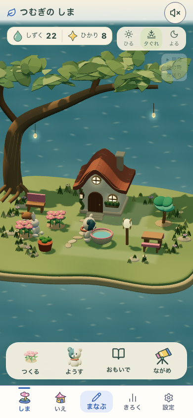
学ぶ、選ぶ、庭に置く。
初期プロフィールだけを用意し、3問の実回答で6しずくを獲得。花を買って配置し、再読み込みしても残るところまでの実画面です。
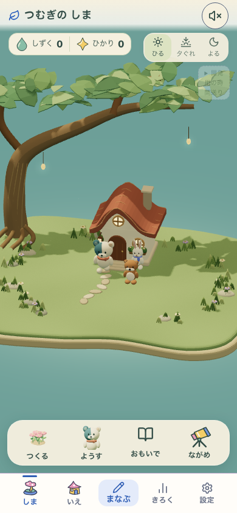
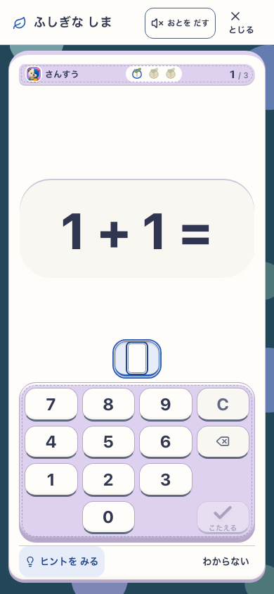
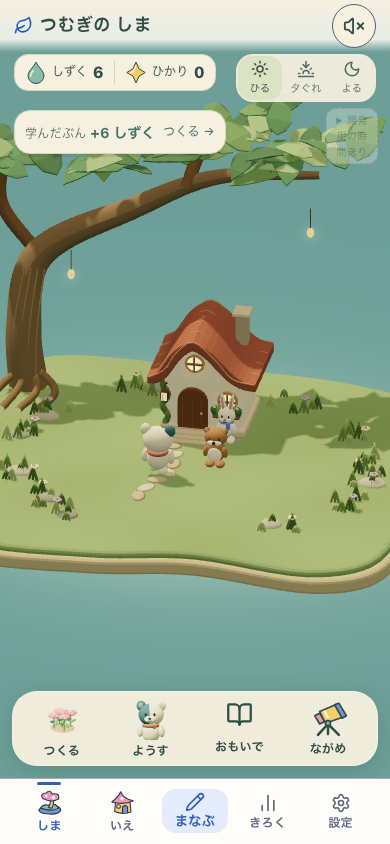
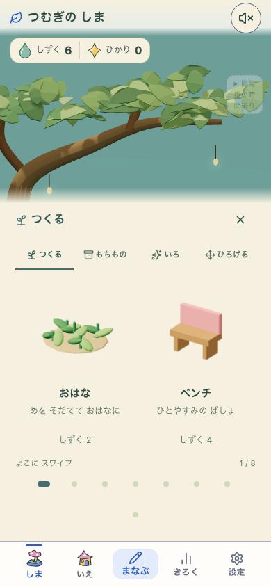
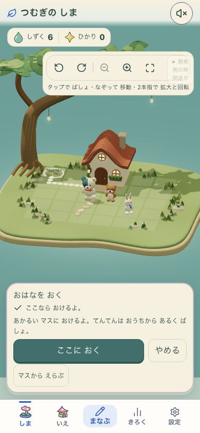
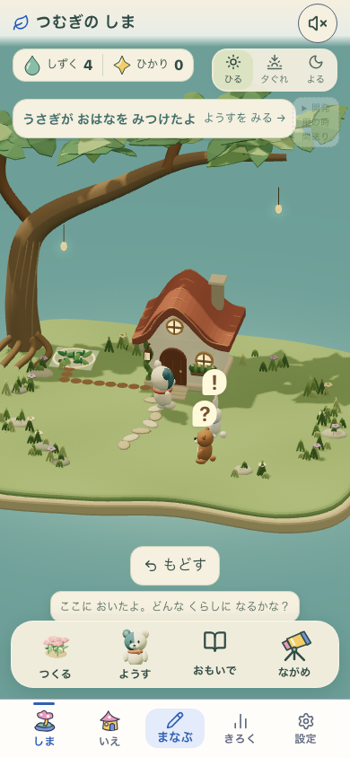
水の中に見つけた星を、思い出に。
ここからは別プロフィールの診断用8品配置です。水とランタンの条件を用意し、普通の庭で触れる、見る、残す、同じ庭で再演するところを確認しました。
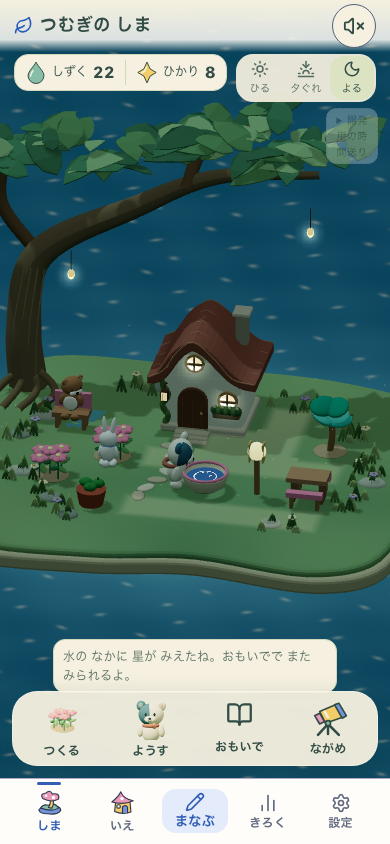
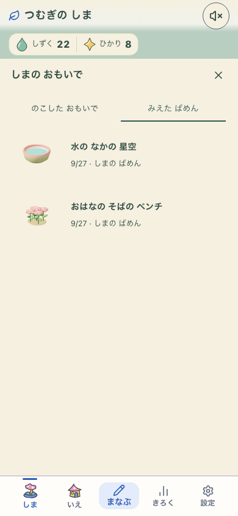
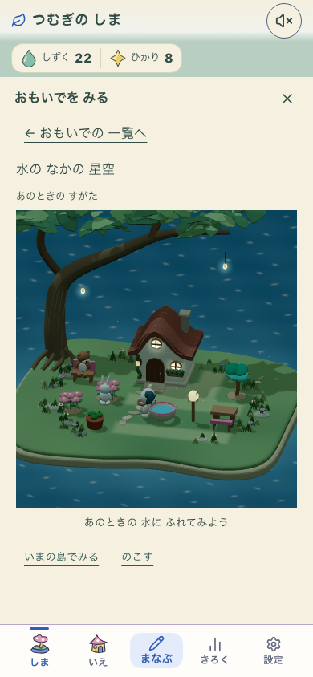
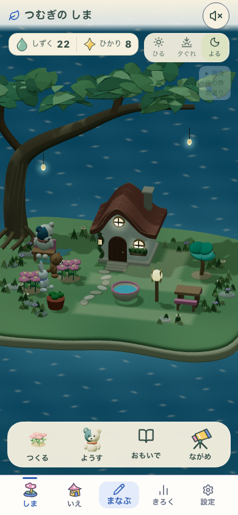
広い画面でも、同じ世界。
768×1024での昼・夕方・思い出。配置の余白と操作面を保ちながら、同じ3Dモデルを使います。


オフラインでも、続きが残る。
本番と同じ形式のローカルbuildで、初回設定から4問を実際に回答。検査用のcredit追加は行わず、花の所有と学習履歴がオフラインの再読み込み後も保たれることを確認しています。

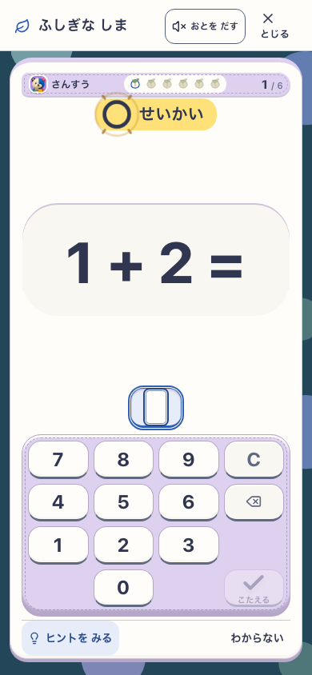

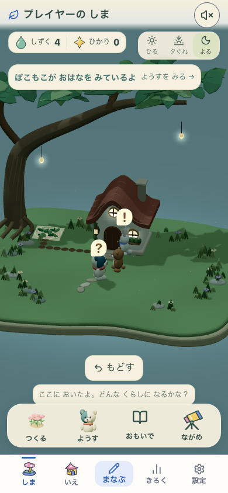

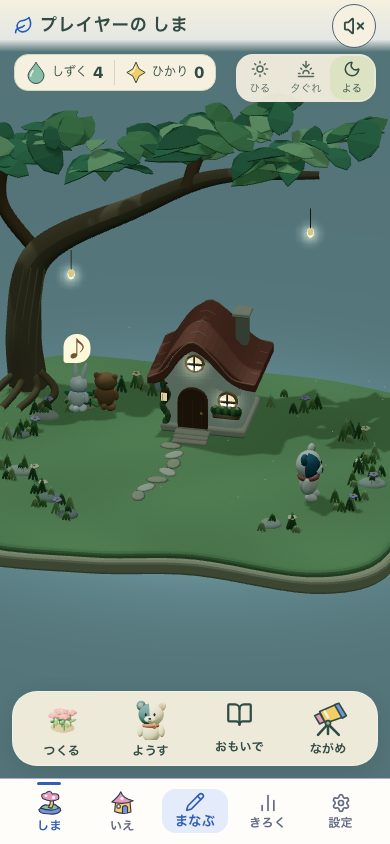

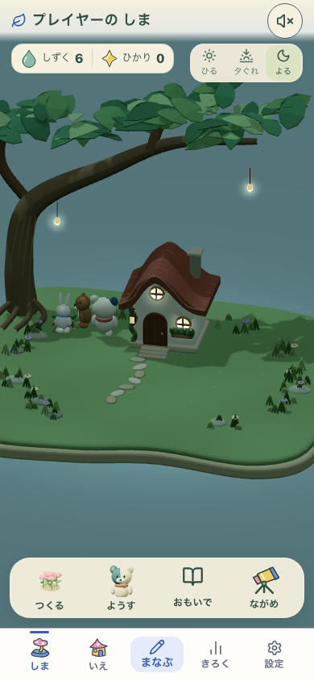

魅力と動作を、別々に見る。
美術 次の改善へ曲がった木・家・水・相棒を実装。素材の豊かさ、奥行き、相棒の表情、水の出来事の大きさ、全画面の統一に差が残ります。
無説明の理解 未観察子どもが説明なしで分かるか、また遊びたいかは、これから実際の利用で確認します。
今回の動作範囲 確認済み4,218 testsと2サイズの実操作・保存・オフライン。全仕様の実装や実機性能の確認とは分けています。